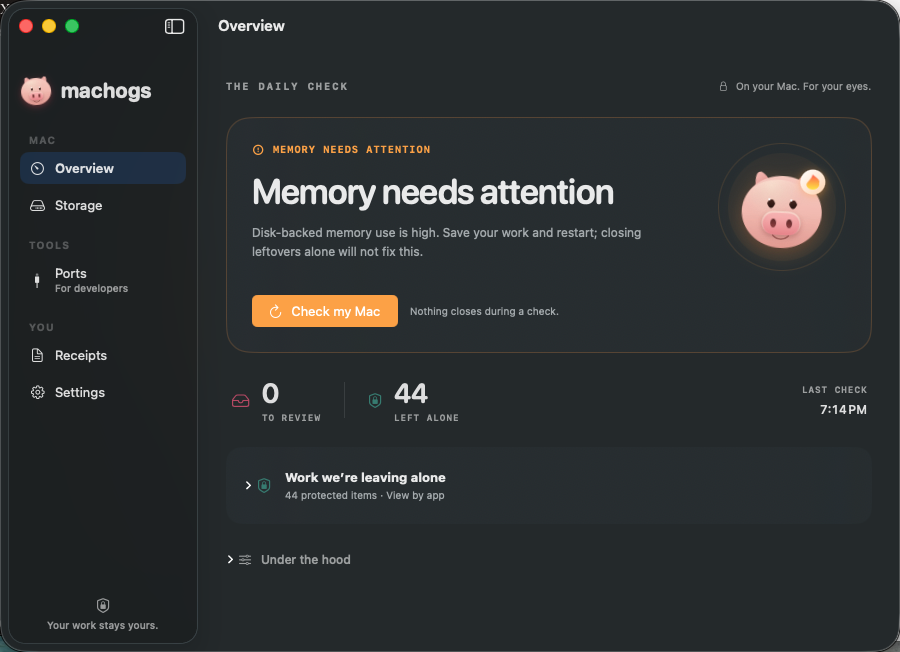

Find what got left behind.
Stuck background jobs. Stranded browsers. Helpers still running after their app is gone. Machogs checks who owns them and what they’re doing.
A little pig with a nose for background work. Find what’s making your Mac slow, hot, or loud — and decide what goes.
Download for MacFree & open source · macOS 13+
Apple silicon + Intel · Signed & notarized
See what needs your attention, what was left alone, and when your Mac was last checked.

A finding is a reason to take a look. You get the context before you make the call.
Stuck background jobs. Stranded browsers. Helpers still running after their app is gone. Machogs checks who owns them and what they’re doing.
See which app left it, how long it has been there, and what it has cost. Plain words make the next step easier to judge.
Opening the app closes nothing. Review a finding before choosing to close it. Live Codex and Claude Code sessions stay protected.
See common caches and storage hotspots. Rebuildable caches are separate from your own files, with a review before clearing.
Find the app holding a port. Protected work and managed services are called out, so you know what can stay and what needs a different fix.
Look back at what was closed and which apps keep leaving work behind. A record of the cleanup, with the cost in plain sight.
Download. Drag to Applications. Check your Mac.
No account. No subscription.
Version 1.4.0 · macOS 13 or later
brew install bnishit/tap/machogsThen run machogs for a read-only check.
Other ways to install ↗
No. The first scan only looks. Closing a process or clearing an allowed cache takes a separate action from you.
Machogs protects running Codex and Claude Code sessions, macOS system processes, and known productive work. The command-line safety check, machogs --check, lists protections without closing anything.
The app supports macOS 13 Ventura or later, on Apple silicon and Intel. Version 1.4.0 is Developer ID signed and Apple-notarized. Open the download and drag Machogs to Applications.
No admin password, Full Disk Access, or Accessibility access is required. Notifications and Start at Login are optional.
Yes. Both the Mac app and the command-line tool are free and open source under the MIT license. Read the code on GitHub.